Analytical Chemistry · Formulation · Drug Delivery · Purification · Small Molecules · Biologics · Pharmaceutical Sciences · Biotechnology
A scientist working at the interface of academia and industry, with a patient-centred mindset that drives every formulation, method, and molecule he touches. Focusing on translating pharmaceutical science into therapies that meaningfully improve quality of life; from injectable hydrogel depots designed to deliver sustained relief in chronic neuropathic pain, to advanced drug delivery platforms aimed at improving treatment adherence, reducing dosing burden, and broadening access for patients living with conditions where current options fall short. Combines the precision of analytical chemistry and ICH-compliant method validation with the creativity needed to design delivery systems that put the patient, not just the molecule, at the centre of the science.
Dr. Stefan Jackson is a Marie Curie Research Fellow (H2020-MSCA-ITN – GA956477) and Novartis BioCamp 2025 Winning Team member, holding a PhD in Chemical and Pharmaceutical Sciences & Biotechnology from the University of Camerino, Italy. His thesis was titled — Precision Medicine for Chronic Neuropathic Pain: A Multiplatform Approach to Drug Delivery.
With 6+ years of interdisciplinary R&D experience, Stefan specialises in the design, synthesis, characterisation, and analytical method development for advanced drug delivery platforms. He developed and ICH Q2-validated an RP-HPLC-DAD/UV method for crobenetine (BIII 890 CL, Boehringer Ingelheim) release kinetics, and routinely applies LC-MS, UHPLC, GC-MS, NMR, DLS, SEM, AFM, DSC, FT-IR, and rheology in a regulatory-compliant framework.
His industrial secondment at Polypure AS (Oslo, Norway) saw him purify monodisperse PEG-lipid conjugates to >98% purity using FPLC and preparative chromatography, monitored by HPLC-MS, working within GMP/ALCOA+ compliance and supporting OOS/CAPA documentation — directly mirroring the expectations of pharmaceutical industry R&D roles.
Developed and validated RP-HPLC-DAD/UV method for crobenetine (BIII 890 CL, Boehringer Ingelheim) per ICH Q2. Synthesised PEG-blended & conventional PLGA nanoparticles; conducted drug release studies at pH 6.4 & 7.4; characterised by DLS and SEM.
Analytical · GMPFormulated in-situ crosslinking hydrogels via Michael addition (vinyl-sulfonated triblock copolymer + thiolated hyaluronic acid). Rheological studies, swelling/degradation, drug release profiling, and stability studies conducted in GMP-aware framework.
Formulation · QbDIndustrial secondment: synthesised and purified monodisperse PEG-lipid conjugates to >98% purity using FPLC & syringe preparative chromatography; purity monitored by RP-HPLC-MS; supported OOS investigations and CAPA documentation within ALCOA+ framework.
LC-MS · GMP · IndustrySynthesised CTA-PEG-lipid chains conjugated to pDMAEMA to enhance transfection efficiency of miRNA antogomiRs targeting DRG. Applied LC-MS for purity assessment; SPE & LLE sample prep optimised for reduced matrix effects.
Gene Delivery · LC-MSPrepared chitosan nanoparticles via ionic gelation; optimised particle size and PDI systematically. Loaded with poly-uracil (model) and lidocaine (NaV1.7 blocker). Full characterisation by DLS, SEM, and in-vitro release studies.
Nanotechnology · AnalyticsSynthesised antibacterial hybrid nanoparticles for edible coatings (MGU, India); characterised by DLS, FT-IR, TEM; antibacterial assays & MTT cytotoxicity. Developed PLA/carbon black composites; ASTM mechanical & morphological characterisation. Published in Polymer Composites (2021).
Materials Science · PublishedSelected among 36 participants from across the global pharmaceutical world. The team delivered an outstanding AI-driven pharmaceutical business case — combining scientific and business knowledge — and was selected as the best group by senior Novartis executives.
One of the world's most prestigious and competitive research fellowships, awarded to exceptional early-career scientists for innovative interdisciplinary research in nanoparticle-based therapy for chronic neuropathic pain.
Selected by senior researchers to evaluate and award poster presentations at the international CRS Annual Meeting — a recognition of standing and scientific expertise within the controlled-release community as an early-career scientist.
Awarded “Premio del Pubblico” for delivering the most compelling 3-minute science talk, “Pain: a necessary evil?” — advancing to the national finals. Recognised for exceptional ability to communicate complex science to non-specialist audiences.
Elected by ~50 doctoral candidates to represent their interests in faculty and institutional governance; acted as liaison between doctoral candidates and administration, contributing to curriculum improvements and doctoral research days.
Completed a specialised programme on the US Biomedical Innovation Marketplace and its global role, deepening understanding of pharmaceutical investment, regulatory strategy, and biotech commercialisation.
Awarded Distinction in the IGCSE, demonstrating consistent academic excellence from an early age.
The international network of researchers who have been funded by the Marie Skłodowska-Curie Actions (MSCA) programme of the European Commission — connecting over 100,000 researchers across the globe working at the frontier of science.
The premier international society dedicated to the science of controlled release and drug delivery. Active member of both the global CRS and the CRS Italy Chapter; invited Poster Jury Member at CRS Annual Meeting 2025, Philadelphia.
The world's largest scientific society, advancing the broader chemistry enterprise and its practitioners for the benefit of Earth and its people — providing access to cutting-edge research, peer networks, and professional development resources.
The leading professional forum for science, practice, and education in the field of pain — bringing together scientists, clinicians, and other health professionals to advance pain research and improve the care of patients with pain worldwide.
The European scientific society dedicated to the development and promotion of molecular imaging in biology and medicine — supporting the exchange of scientific information across imaging modalities including MRI, PET, optical, and multimodal approaches.
ESR1 and elected ESR Committee Member of the EU-funded PIANO consortium (GA956477) spanning 8 institutions, 7 countries. Served as social media officer managing Instagram, LinkedIn, and Facebook; co-authored the consortium's final press release.
A glimpse beyond the bench — from international pitch competitions and academic milestones to faith-based service and science communication for the wider community.
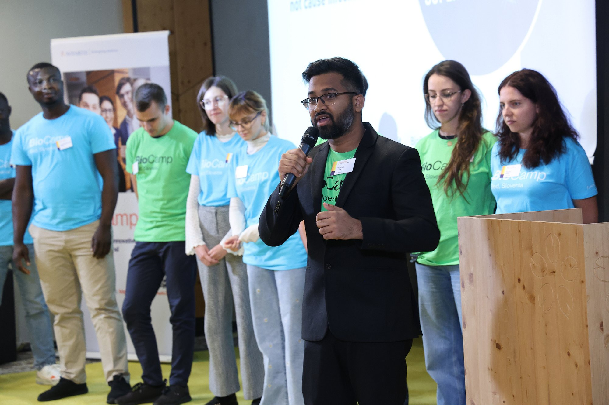
Delivering the final pitch for our AI-driven pharmaceutical business case before senior Novartis executives — selected as the best team among 36 international participants.
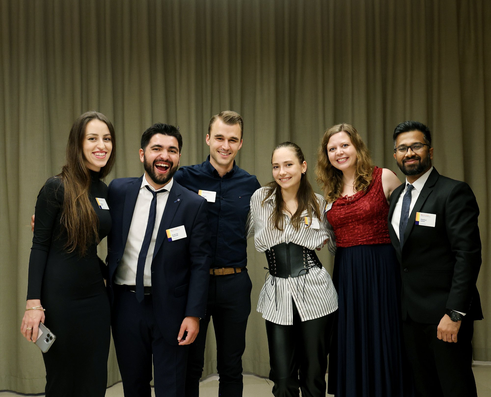
With our international winning team after the closing ceremony — a celebration of cross-disciplinary collaboration spanning science, business and pharmaceutical strategy.
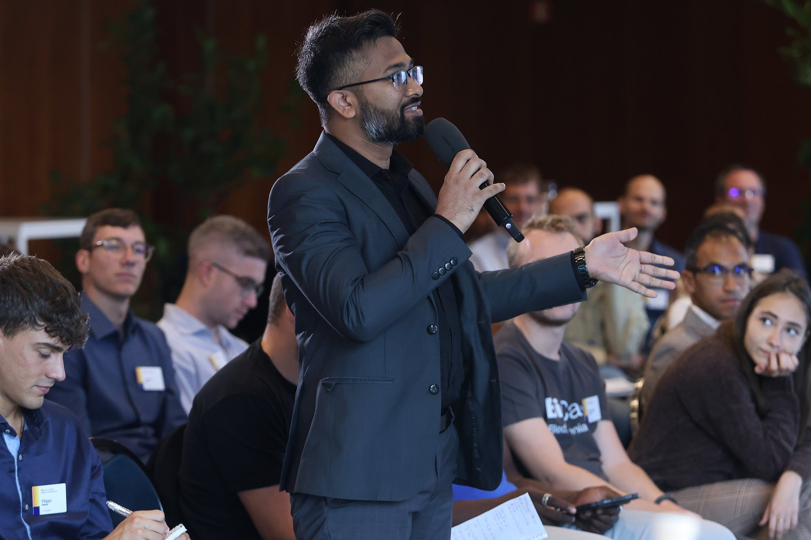
Posing a strategic question during the executive panel session at Novartis BioCamp — an opportunity to engage directly with senior pharmaceutical leadership on the future of the industry.
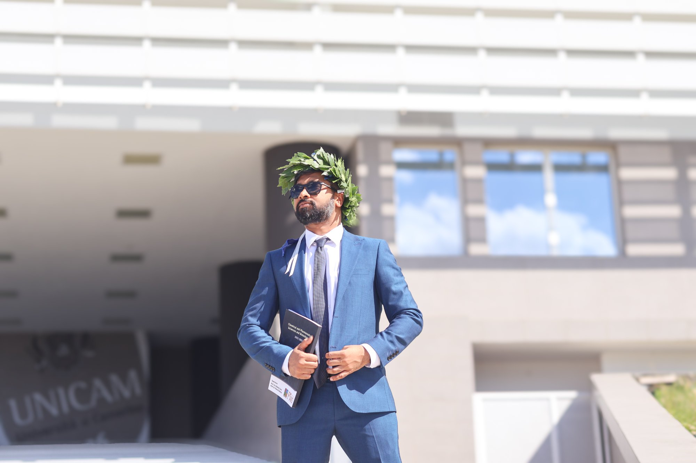
Wearing the traditional Italian laurel crown after successfully defending the doctoral thesis — Precision Medicine for Chronic Neuropathic Pain: A Multiplatform Approach to Drug Delivery.
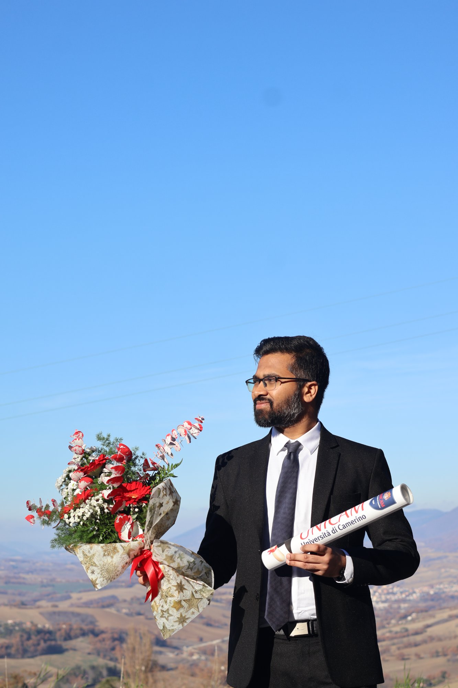
Officially conferred the title of Dottore di Ricerca in Chemical and Pharmaceutical Sciences & Biotechnology — the culmination of three years as a Marie Skłodowska-Curie Fellow.
Invited speaker on an international panel webinar alongside neuroscientists and analysts from Unicam Italy, Cognizant UK, and the Max-Planck Institute — sharing insights on building intentional, mission-driven scientific careers.
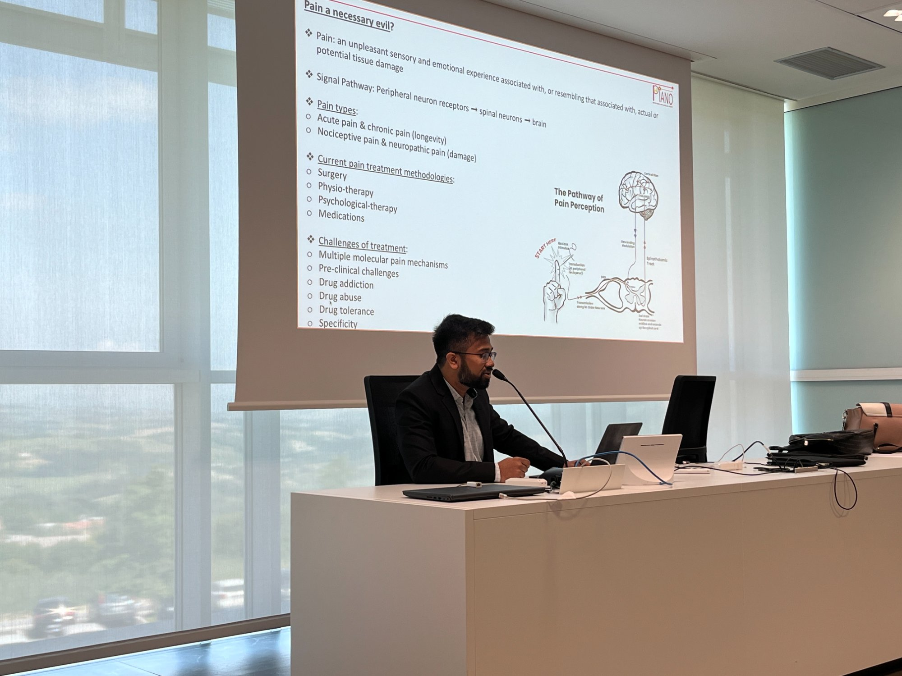
Presenting work on the pathway of pain perception and current treatment challenges as part of the PIANO MSCA ITN doctoral programme — framing the scientific case for next-generation analgesic delivery.
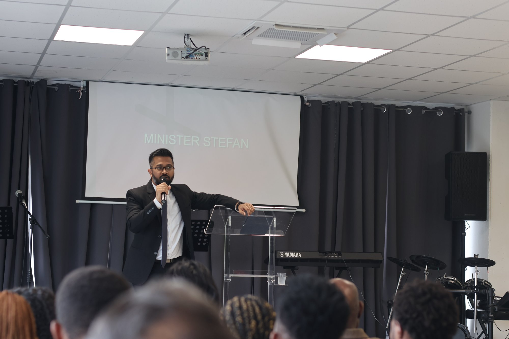
Serving as Minister at the Spirit and Life Family Bible Church — preaching, teaching, and supporting the congregation as part of an ongoing commitment to faith-based community service.
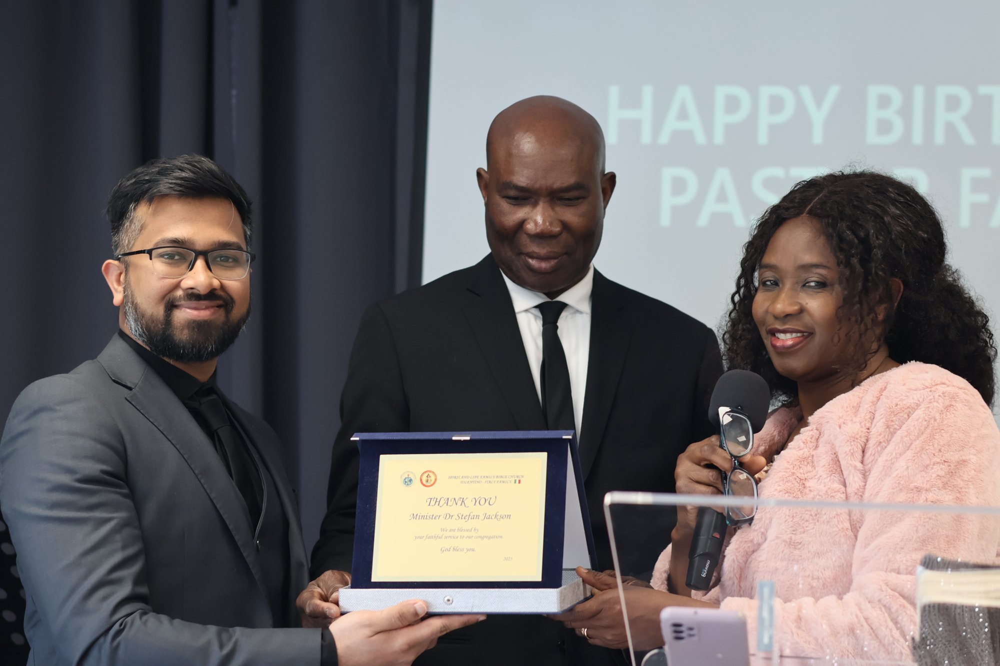
Receiving a memento from the Pastors of SLFBC in recognition of faithful service as a Minister to the congregation — a meaningful acknowledgement of community and spiritual contribution beyond the lab.
Photography is how Stefan humanises science — a tool to make the extraordinary visible, to slow down and observe. All photographs below were taken by Dr. Stefan Jackson.
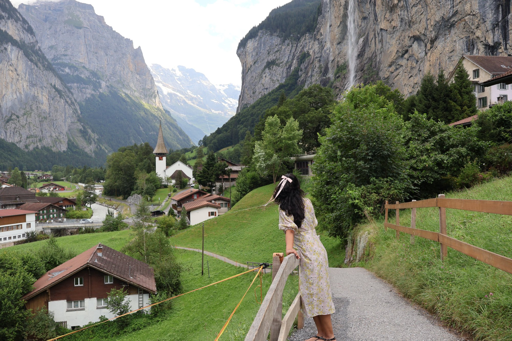
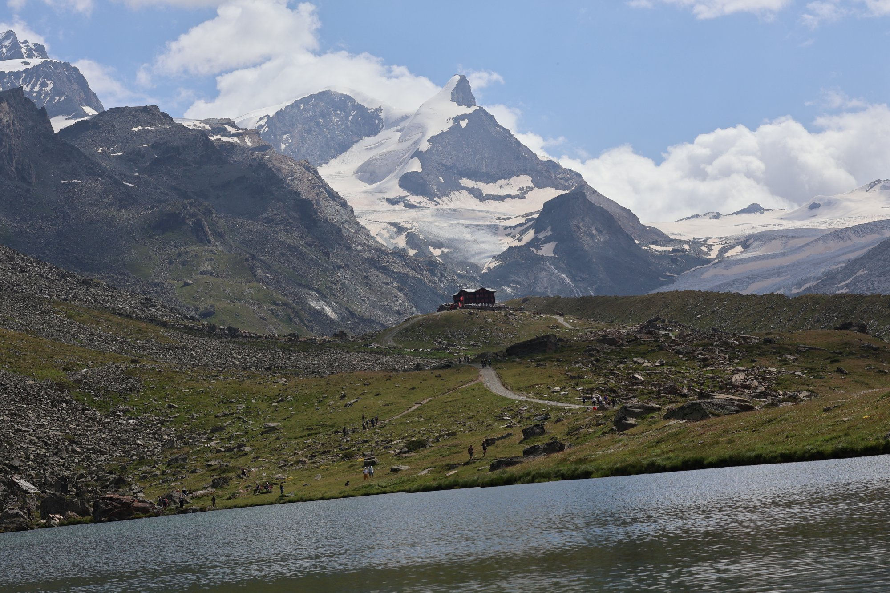
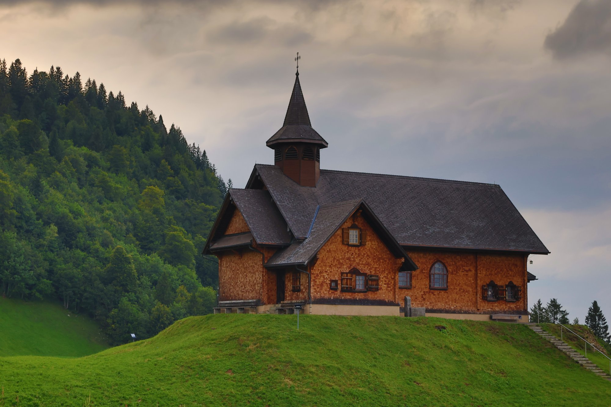
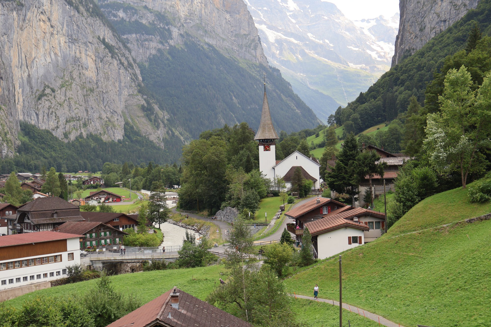
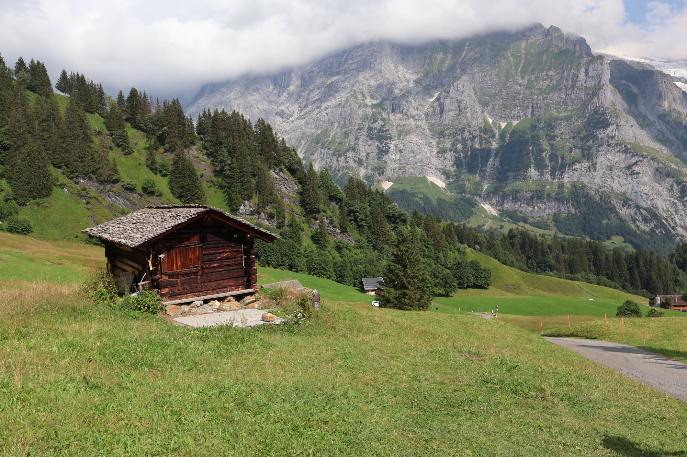
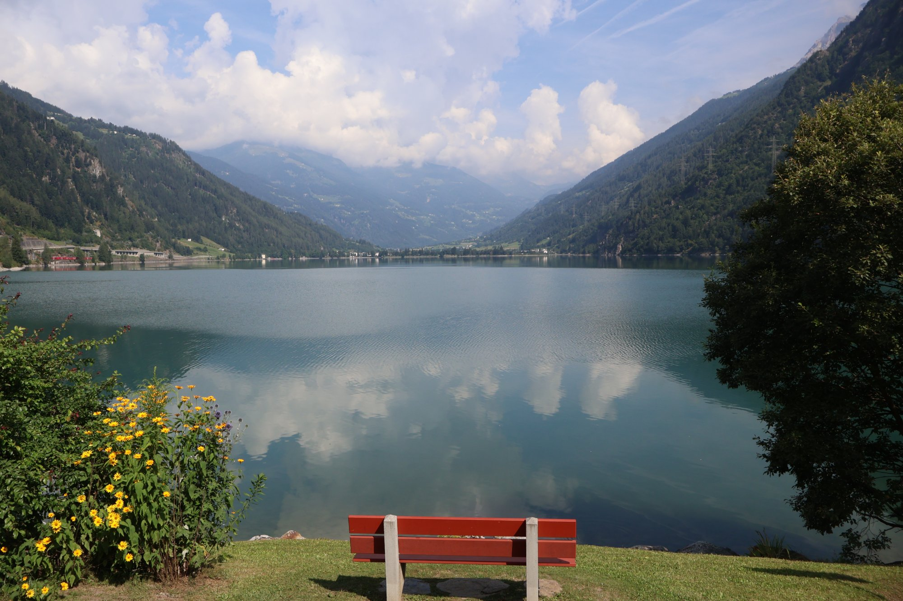
Open to industrial R&D roles (analytical, formulation, pharmaceutical sciences), research collaborations, scientific leadership or managerial positions, coordination and speaking engagements. Open to relocation globally.
stefan.jackson@unicam.itBased in Camerino, Italy · Open to Relocation Globally